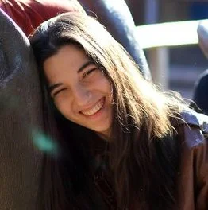

Team

Prof Watson founded the VX Lab at NC State in 2006. The Lab's team seeks to make our world a bit better, while also getting to know one another, professionally and personally.

Evan is working on near-zero latency graphics systems. His current prototype displays a response to player or user input in less than 2 ms. He is collaborating with Profs. Hee-Jin Choi of Sejong and Hyoungsik Nam of Kyung Hee Universities in Korea. He already has several publications, including at SID Display Week, at ACM I3D, and at both Emerging Technologies and the PRICE Workshop at SIGGRAPH. (li)

Anuraag is studying the effect of typical levels of delay on video conferencing. He has also worked with Tianyu Wu on 3D display, publishing a Best Paper at SID Display Week. (li)

Ashish is learning about how competitive gamers configure their systems. He is addressing the following questions: do they favor temporal or spatial detail? Do they understand the systems settings they are configuring? Does their understanding influence their settings choices? He has published at ACM I3D and SIGGRAPH's PRICE Workshop. (li)

Dani is working on improving video conferencing, with collaborators Yoshifumi Kitamura and Miao Cheng at Tohoku University in Japan. First, using a survey of conference experts, he is studying the benefits, challenges and best practices for hybrid conferencing, in which in-person and remote conferencing mingle. Second, to make video conferencing more natural, he is developing a low-cost system that preserves gaze. Dani published a survey of video conferencing research in the journal Presence. (li)

Aaron is developing low latency graphics systems. He specializes in new display scanning patterns, including both stochastic and interactively centered scans. He is collaborating with Profs. Hee-Jin Choi of Sejong and Hyoungsik Nam of Kyung Hee Universities in Korea. His publications include SID Display Week, ACM I3D, and SIGGRAPH's Emerging Technologies and PRICE Workshop. (li)

Arjun is studying esports, especially new methodologies for performing esports experiments, and the effects of temporal (e.g. latency) and spatial detail (e.g. resolution) on game performance. He is performing this work in collaboration with Josef Spjut and others at NVIDIA. He has published at SIGGRAPH, the PRICE Workshop, ACM I3D, CHI Play, Interactions and more.... (li)
Chung-Che works on low-latency rendering. He made our adaptive frameless rendering technique real time, with agent-based image monitoring and GPU ray tracing. He has published at SIGGRAPH and Eurographics. (dissertation) (li)
Maryam studied aesthetics in communicative visualization. She learned that beauty can improve viewer attention to visualizations, and understanding at simple levels. However, making a visualization more beautiful may reduce complex understanding. Much of her work was a collaboration with Blanton Godfrey and UNICEF. She has published at IEEE Visualization and ACM I3D so far. (dissertation) (li)
Tianyu worked on improving 3D display. His technique modeled light flow from pixel, through lens to eye in real time, improving image resolution, viewing angle, and reducing ghosting. He collaborated with Prof. Hee-Jin Choi of Sejong University in Korea. He published his work at the Journal of the SID, SID Display Week (where it was a Distinguished Paper), IEEE VR, and obtained a provisional patent. (dissertation) (li)
Ajinkya worked on real-time, multiview rendering for 3D display. His technique used GPU rasterizers generate points, which he then rendered into multiview buffers. He published his work several times at ACM I3D: for light field display, for multiview effects, and on adaptive synchronization. He also published at ACM Pacific Graphics, and at Eurographics. (dissertation) (li)

Holle worked on the user experience of machine learning, applying qualitative coding practice to ML labeling. Much of her work was a collaboration with Stacy Joines and AJ Rindos at IBM. She published her work at ACM IUI, AAAI, ACM DIS, ACM Smart Graphics and IEEE Visualization. (dissertation) (li)
Adam worked on multiview rendering. He developed a new approach that used GPU rasterizers to generate point clouds in real time customized to the needed views, and then rendered each point into multiple view buffers. He was co-advised by Prof Chris Healey. Adam published his work at Eurographics and the ACM Journal of Computer Graphics Techniques. (dissertation) (li)
Juhee developed new techniques for visualizing layered graphs, and improved understanding of how visual grouping cues can be used in visualization. Some of her work developed out of an early collaboration with Ravi Devarajan of SAS. She published her work at IEEE Visualization on grouping, quilting graphs, and visualizing genealogies. She also published at Mobile HCI and Smart Graphics. (dissertation) (li)